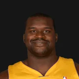

Orlando Magic alumni
All 296 players who played for the Orlando Magic franchise: 286 living, 10 deceased.
Orlando Magic (1989-90 to present)
At a glance
 Tree Rollins, 71, is the oldest living former Magic player (oldest Magic).
Tree Rollins, 71, is the oldest living former Magic player (oldest Magic).- 8 of the 8 Hall of Famers who played for the franchise are living.
Oldest, youngest and most recent
Hall of Famers
8 living, 0 deceased.
Living

Oldest living alum of each era
by first season with the franchiseBirths and deaths by decade
Last surviving players
No season yet where every player but a few has died.
From the season-by-season rosters (37 seasons). A season is listed only when its roster settles it: everyone has died, or up to three players are living and every other player has died. Seasons with a player whose status is unknown are left out.
First season, 1989-90
13 of the 14 players from the 1989-90 roster are living:  Dave Corzine (70),
Dave Corzine (70),  Reggie Theus★2 (68),
Reggie Theus★2 (68),  Sidney Green (65),
Sidney Green (65),  Jeff Turner (64),
Jeff Turner (64),  Mark Acres (63),
Mark Acres (63),  Jerry Reynolds (63),
Jerry Reynolds (63),  Sam Vincent (63),
Sam Vincent (63),  Terry Catledge (63),
Terry Catledge (63),  Otis Smith (62),
Otis Smith (62),  Scott Skiles (62),
Scott Skiles (62),  Morlon Wiley (60),
Morlon Wiley (60),  Michael Ansley (59),
Michael Ansley (59),  Nick Anderson (58).
Nick Anderson (58).
Most accomplished alumni
All alumni
by first season with the team| Nov. 15, 1962 | Living | 63 | 1989-90 to 1991-92 | 216 | |
| Jan. 20, 1968 | Living | 58 | 1989-90 to 1998-99 | 692 | |
| Feb. 8, 1967 | Living | 59 | 1989-90 to 1990-91 | 139 | |
| Aug. 22, 1963 | Living | 63 | 1989-90 to 1992-93 | 224 | |
| April 25, 1956 | Living | 70 | 1989-90 | 6 | |
| Jan. 4, 1961 | Living | 65 | 1989-90 | 73 | |
| July 4, 1957 | Died Jan. 5, 2026 | died at 68 | 1989-90 | 3 | |
| Dec. 23, 1962 | Living | 63 | 1989-90 to 1991-92 | 193 | |
| March 5, 1964 | Living | 62 | 1989-90 to 1993-94 | 384 | |
| Jan. 30, 1964 | Living | 62 | 1989-90 to 1991-92 | 195 | |
| Oct. 13, 1957 | Living | 68 | 1989-90 | 76 | |
| April 9, 1962 | Living | 64 | 1989-90 to 1995-96 | 411 | |
| May 18, 1963 | Living | 63 | 1989-90 to 1991-92 | 151 | |
| Sept. 24, 1966 | Living | 60 | 1989-90 to 1991-92 | 83 | |
| Aug. 5, 1961 | Living | 65 | 1990-91 to 1993-94 | 247 | |
| June 8, 1959 | Died April 27, 2020 | died at 60 | 1990-91 | 2 | |
| Sept. 5, 1968 | Living | 58 | 1990-91 to 1996-97 | 446 | |
| Dec. 20, 1967 | Living | 58 | 1990-91, 1992-93 | 12 | |
| Nov. 9, 1963 | Living | 62 | 1991-92 to 1995-96 | 350 | |
| March 28, 1968 | Living | 58 | 1991-92 to 1992-93 | 60 | |
| April 6, 1969 | Died July 7, 2002 | died at 33 | 1991-92 to 1992-93 | 69 | |
| Dec. 30, 1968 | Living | 57 | 1991-92 | 32 | |
| Feb. 7, 1970 | Living | 56 | 1991-92 | 55 | |
| Dec. 2, 1968 | Living | 57 | 1991-92 | 1 | |
| March 7, 1970 | Living | 56 | 1992-93 to 1993-94 | 81 | |
| Sept. 27, 1965 | Living | 61 | 1992-93 | 47 | |
| March 6, 1972 | Living | 54 | 1992-93 to 1995-96 | 295 | |
| May 22, 1966 | Living | 60 | 1992-93 to 1997-98 | 288 | |
| Oct. 16, 1965 | Living | 60 | 1992-93 | 72 | |
| July 15, 1969 | Living | 57 | 1992-93 to 1993-94 | 6 | |
| Oct. 18, 1969 | Living | 56 | 1993-94 to 1994-95 | 112 | |
| March 19, 1967 | Living | 59 | 1993-94 | 2 | |
| July 12, 1969 | Living | 57 | 1993-94 to 1995-96 | 5 | |
| July 18, 1971 | Living | 55 | 1993-94 to 1998-99 | 369 | |
| Sept. 23, 1964 | Living | 62 | 1993-94 | 34 | |
| Jan. 8, 1967 | Living | 59 | 1993-94 | 4 | |
| June 16, 1955 | Living | 71 | 1993-94 to 1994-95 | 96 | |
| May 15, 1970 | Living | 56 | 1993-94 to 1994-95 | 14 | |
| June 22, 1968 | Living | 58 | 1994-95 to 2002-03 | 502 | |
| July 4, 1965 | Living | 61 | 1994-95 to 1998-99, 2001-02 to 2002-03 | 411 | |
| March 22, 1966 | Living | 60 | 1994-95 to 1996-97 | 230 | |
| July 19, 1970 | Died June 9, 2016 | died at 45 | 1994-95 to 1995-96 | 71 | |
| June 8, 1968 | Living | 58 | 1995-96 | 4 | |
| May 17, 1963 | Living | 63 | 1995-96 | 67 | |
| March 23, 1973 | Living | 53 | 1995-96 to 1996-97 | 68 | |
| Dec. 17, 1964 | Died Sept. 26, 2024 | died at 59 | 1995-96 | 63 | |
| Feb. 12, 1970 | Living | 56 | 1996-97 | 2 | |
| Sept. 13, 1973 | Living | 53 | 1996-97 to 1997-98 | 58 | |
| Oct. 28, 1973 | Living | 52 | 1996-97 | 17 | |
| May 10, 1959 | Living | 67 | 1996-97 to 1998-99 | 138 | |
| May 10, 1965 | Living | 61 | 1996-97 to 1997-98 | 121 | |
| March 8, 1965 | Living | 61 | 1996-97 | 6 | |
| Jan. 15, 1968 | Died March 12, 2023 | died at 55 | 1996-97 | 1 | |
| Feb. 9, 1968 | Living | 58 | 1996-97 to 1999-00 | 204 | |
| Sept. 11, 1963 | Living | 63 | 1996-97 to 1998-99 | 155 | |
| May 9, 1968 | Living | 58 | 1997-98 | 24 | |
| Oct. 30, 1965 | Living | 60 | 1997-98 | 12 | |
| Oct. 13, 1961 | Living | 64 | 1997-98 | 66 | |
| Jan. 25, 1964 | Living | 62 | 1997-98 | 3 | |
| Sept. 2, 1974 | Living | 52 | 1997-98 | 17 | |
| Sept. 12, 1965 | Living | 61 | 1997-98 | 11 | |
| Dec. 27, 1972 | Living | 53 | 1997-98 to 1998-99 | 20 | |
| April 13, 1971 | Living | 55 | 1997-98 to 2001-02, 2005-06 to 2007-08 | 360 | |
| Feb. 15, 1964 | Living | 62 | 1997-98 | 63 | |
| June 4, 1974 | Living | 52 | 1997-98, 1999-00 | 17 | |
| Oct. 3, 1969 | Living | 57 | 1997-98 | 4 | |
| July 13, 1963 | Living | 63 | 1997-98 | 4 | |
| Sept. 9, 1967 | Living | 59 | 1998-99 | 22 | |
| Aug. 18, 1969 | Living | 57 | 1998-99 | 49 | |
| June 15, 1977 | Living | 49 | 1998-99 to 2000-01 | 207 | |
| May 31, 1976 | Living | 50 | 1998-99 to 1999-00 | 54 | |
| June 6, 1974 | Living | 52 | 1998-99 | 1 | |
| Aug. 3, 1969 | Living | 57 | 1998-99 | 6 | |
| Nov. 21, 1975 | Living | 50 | 1998-99 | 5 | |
| Jan. 12, 1960 | Living | 66 | 1998-99 | 27 | |
| Nov. 3, 1974 | Living | 51 | 1999-00 | 46 | |
| Nov. 26, 1970 | Living | 55 | 1999-00 to 2000-01 | 162 | |
| Aug. 14, 1974 | Living | 52 | 1999-00 | 82 | |
| June 2, 1976 | Living | 50 | 1999-00 | 1 | |
| Sept. 24, 1974 | Living | 52 | 1999-00 | 3 | |
| Aug. 23, 1976 | Living | 50 | 1999-00 to 2007-08 | 513 | |
| Sept. 3, 1967 | Living | 59 | 1999-00 | 45 | |
| Oct. 2, 1974 | Living | 52 | 1999-00, 2008-09 to 2009-10 | 129 | |
| Nov. 12, 1979 | Living | 46 | 1999-00 | 77 | |
| May 18, 1976 | Living | 50 | 1999-00 | 31 | |
| June 19, 1975 | Living | 51 | 1999-00 | 16 | |
| Sept. 10, 1974 | Living | 52 | 1999-00 | 81 | |
| Oct. 8, 1971 | Living | 55 | 1999-00 to 2001-02 | 225 | |
| June 22, 1973 | Living | 53 | 2000-01 | 26 | |
| Nov. 29, 1968 | Living | 57 | 2000-01 to 2001-02 | 14 | |
| Feb. 1, 1973 | Living | 53 | 2000-01 to 2004-05 | 284 | |
| Oct. 5, 1972 | Living | 54 | 2000-01 to 2002-03, 2004-05 to 2006-07 | 200 | |
| March 13, 1976 | Living | 50 | 2000-01 to 2001-02 | 156 | |
| May 24, 1979 | Living | 47 | 2000-01 to 2003-04 | 295 | |
| Feb. 19, 1980 | Living | 46 | 2000-01 to 2002-03 | 194 | |
| March 28, 1969 | Living | 57 | 2000-01 | 6 | |
| Dec. 30, 1973 | Living | 52 | 2000-01 to 2001-02 | 133 | |
| Aug. 31, 1970 | Living | 56 | 2000-01 | 6 | |
| June 19, 1968 | Living | 58 | 2001-02 | 60 | |
| Aug. 5, 1962 | Living | 64 | 2001-02 | 65 | |
| Oct. 31, 1981 | Living | 44 | 2001-02 to 2003-04 | 145 | |
| Oct. 27, 1967 | Living | 58 | 2001-02 | 9 | |
| Feb. 13, 1979 | Living | 47 | 2001-02 to 2002-03 | 82 | |
| Dec. 14, 1973 | Living | 52 | 2002-03 | 62 | |
| June 20, 1977 | Living | 49 | 2002-03 to 2003-04 | 75 | |
| Sept. 24, 1981 | Living | 45 | 2002-03 to 2003-04 | 98 | |
| July 24, 1979 | Living | 47 | 2002-03 | 35 | |
| Nov. 26, 1969 | Living | 56 | 2002-03 | 79 | |
| May 11, 1981 | Living | 45 | 2002-03 | 26 | |
| Feb. 11, 1975 | Living | 51 | 2002-03 | 80 | |
| Oct. 5, 1971 | Living | 55 | 2002-03 | 22 | |
| March 29, 1980 | Died Jan. 23, 2020 | died at 39 | 2003-04 | 1 | |
| May 12, 1980 | Living | 46 | 2003-04, 2006-07 to 2008-09 | 250 | |
| Dec. 20, 1975 | Living | 50 | 2003-04 | 9 | |
| Jan. 7, 1981 | Living | 45 | 2003-04 | 38 | |
| Aug. 26, 1980 | Living | 46 | 2003-04 | 24 | |
| Feb. 7, 1973 | Living | 53 | 2003-04 | 81 | |
| July 8, 1979 | Living | 47 | 2003-04 | 20 | |
| May 3, 1977 | Living | 49 | 2003-04, 2008-09 | 90 | |
| Feb. 22, 1975 | Living | 51 | 2003-04 | 8 | |
| Feb. 10, 1984 | Living | 42 | 2003-04 | 59 | |
| July 16, 1981 | Living | 45 | 2003-04 | 10 | |
| Sept. 9, 1969 | Died June 7, 2016 | died at 46 | 2003-04 | 20 | |
| April 3, 1981 | Living | 45 | 2003-04 to 2005-06 | 163 | |
| July 11, 1966 | Living | 60 | 2003-04 | 46 | |
| April 5, 1975 | Living | 51 | 2003-04 | 37 | |
| Aug. 1, 1968 | Living | 58 | 2004-05 to 2005-06 | 91 | |
| Feb. 21, 1982 | Living | 44 | 2004-05 | 11 | |
| Feb. 11, 1976 | Living | 50 | 2004-05 to 2006-07, 2008-09 | 306 | |
| April 18, 1979 | Living | 47 | 2004-05 | 8 | |
| Aug. 26, 1974 | Living | 52 | 2004-05 to 2005-06 | 85 | |
| May 9, 1970 | Living | 56 | 2004-05 | 21 | |
| Feb. 21, 1977 | Living | 49 | 2004-05 to 2005-06 | 124 | |
| Dec. 8, 1985 | Living | 40 | 2004-05 to 2011-12 | 621 | |
| Nov. 24, 1980 | Died Sept. 12, 2023 | died at 42 | 2004-05 | 31 | |
| May 25, 1975 | Living | 51 | 2004-05 | 10 | |
| April 5, 1980 | Living | 46 | 2004-05 to 2005-06 | 73 | |
| Sept. 1, 1975 | Living | 51 | 2004-05 | 23 | |
| Feb. 9, 1982 | Living | 44 | 2004-05 to 2013-14 | 651 | |
| March 19, 1979 | Living | 47 | 2004-05 to 2008-09, 2010-11 to 2012-13 | 497 | |
| June 30, 1985 | Living | 41 | 2005-06 to 2007-08 | 89 | |
| July 30, 1979 | Living | 47 | 2005-06 to 2007-08 | 161 | |
| March 1, 1982 | Living | 44 | 2005-06 to 2006-07 | 49 | |
| May 8, 1980 | Living | 46 | 2005-06 to 2007-08 | 188 | |
| June 20, 1985 | Living | 41 | 2005-06 to 2006-07 | 110 | |
| Jan. 11, 1979 | Living | 47 | 2005-06 | 22 | |
| Feb. 27, 1984 | Living | 42 | 2006-07 to 2007-08 | 27 | |
| June 24, 1984 | Living | 42 | 2006-07 to 2012-13 | 396 | |
| Dec. 4, 1980 | Living | 45 | 2007-08 to 2008-09 | 66 | |
| Nov. 8, 1978 | Living | 47 | 2007-08 | 68 | |
| March 9, 1975 | Living | 51 | 2007-08 to 2008-09 | 91 | |
| Feb. 17, 1984 | Living | 42 | 2007-08 to 2010-11 | 175 | |
| Aug. 8, 1979 | Living | 47 | 2007-08 to 2010-11 | 257 | |
| July 24, 1976 | Living | 50 | 2008-09 | 29 | |
| Oct. 3, 1985 | Living | 41 | 2008-09 | 77 | |
| Feb. 7, 1982 | Living | 44 | 2008-09 to 2010-11 | 148 | |
| March 1, 1984 | Living | 42 | 2008-09 | 12 | |
| May 6, 1988 | Living | 38 | 2009-10 to 2011-12 | 188 | |
| March 9, 1980 | Living | 46 | 2009-10 | 81 | |
| April 30, 1985 | Living | 41 | 2009-10 to 2010-11 | 126 | |
| Jan. 26, 1977 | Living | 49 | 2009-10 to 2010-11 | 97 | |
| Nov. 18, 1975 | Living | 50 | 2009-10 to 2010-11 | 98 | |
| June 27, 1978 | Living | 48 | 2010-11 | 18 | |
| Jan. 6, 1982 | Living | 44 | 2010-11 | 49 | |
| Jan. 17, 1988 | Living | 38 | 2010-11 to 2011-12 | 78 | |
| Aug. 31, 1982 | Living | 44 | 2010-11 to 2011-12 | 114 | |
| Jan. 20, 1981 | Living | 45 | 2010-11 to 2011-12 | 109 | |
| April 13, 1980 | Living | 46 | 2010-11 to 2011-12 | 105 | |
| Jan. 1, 1986 | Living | 40 | 2011-12 to 2013-14 | 140 | |
| Aug. 30, 1989 | Living | 37 | 2011-12 | 14 | |
| Jan. 23, 1979 | Living | 47 | 2011-12 | 9 | |
| March 31, 1988 | Living | 38 | 2011-12 | 17 | |
| Aug. 6, 1990 | Living | 36 | 2011-12 | 16 | |
| July 5, 1988 | Living | 38 | 2011-12 to 2012-13 | 56 | |
| July 21, 1985 | Living | 41 | 2011-12 | 33 | |
| Oct. 15, 1985 | Living | 40 | 2012-13 to 2013-14, 2017-18 | 190 | |
| April 1, 1985 | Living | 41 | 2012-13 | 43 | |
| May 11, 1993 | Living | 33 | 2012-13 to 2014-15 | 201 | |
| Feb. 17, 1980 | Living | 46 | 2012-13 | 10 | |
| July 15, 1992 | Living | 34 | 2012-13 to 2015-16 | 205 | |
| June 20, 1990 | Living | 36 | 2012-13 | 63 | |
| Nov. 6, 1991 | Living | 34 | 2012-13 to 2013-14 | 77 | |
| Feb. 28, 1987 | Living | 39 | 2012-13 | 41 | |
| Feb. 25, 1989 | Living | 37 | 2012-13 to 2013-14 | 154 | |
| Dec. 8, 1989 | Living | 36 | 2012-13 to 2015-16 | 247 | |
| March 26, 1990 | Living | 36 | 2012-13 to 2014-15 | 177 | |
| July 5, 1982 | Living | 44 | 2012-13 | 27 | |
| Oct. 24, 1990 | Living | 35 | 2012-13 to 2020-21 | 591 | |
| Aug. 12, 1989 | Living | 37 | 2013-14 to 2015-16 | 133 | |
| July 16, 1984 | Living | 42 | 2013-14 | 11 | |
| Feb. 18, 1983 | Living | 43 | 2013-14 | 34 | |
| May 4, 1992 | Living | 34 | 2013-14 to 2015-16 | 224 | |
| June 21, 1983 | Living | 43 | 2013-14 | 31 | |
| March 25, 1993 | Living | 33 | 2013-14 | 4 | |
| Oct. 29, 1992 | Living | 33 | 2014-15 to 2020-21 | 435 | |
| May 17, 1983 | Living | 43 | 2014-15 to 2015-16 | 119 | |
| Sept. 16, 1995 | Living | 31 | 2014-15 to 2020-21 | 428 | |
| April 4, 1983 | Living | 43 | 2014-15 | 56 | |
| July 28, 1981 | Living | 45 | 2014-15 | 52 | |
| Sept. 21, 1992 | Living | 34 | 2014-15 to 2015-16 | 44 | |
| Feb. 22, 1994 | Living | 32 | 2014-15 to 2017-18 | 281 | |
| Feb. 13, 1981 | Living | 45 | 2014-15 | 47 | |
| Feb. 13, 1992 | Living | 34 | 2015-16 | 5 | |
| Feb. 25, 1995 | Living | 31 | 2015-16 to 2017-18 | 219 | |
| May 15, 1987 | Living | 39 | 2015-16 | 22 | |
| Sept. 23, 1989 | Living | 37 | 2015-16 | 25 | |
| July 14, 1991 | Living | 35 | 2015-16 | 55 | |
| March 2, 1986 | Living | 40 | 2015-16 | 76 | |
| April 17, 1984 | Living | 42 | 2015-16 to 2016-17 | 95 | |
| Nov. 10, 1987 | Living | 38 | 2016-17 to 2019-20 | 291 | |
| Aug. 28, 1992 | Living | 34 | 2016-17 to 2017-18 | 163 | |
| Oct. 10, 1992 | Living | 34 | 2016-17 | 2 | |
| May 17, 1993 | Living | 33 | 2016-17 | 5 | |
| March 28, 1994 | Living | 32 | 2016-17 | 5 | |
| Aug. 28, 1986 | Living | 40 | 2016-17 | 69 | |
| Sept. 18, 1989 | Living | 37 | 2016-17 | 56 | |
| Aug. 21, 1987 | Living | 39 | 2016-17 | 36 | |
| July 13, 1987 | Living | 39 | 2016-17 | 8 | |
| Feb. 5, 1991 | Living | 35 | 2016-17 to 2022-23 | 349 | |
| June 17, 1986 | Living | 40 | 2016-17 | 45 | |
| Dec. 30, 1990 | Living | 35 | 2016-17 | 22 | |
| Sept. 9, 1996 | Living | 30 | 2016-17 | 19 | |
| Jan. 12, 1993 | Living | 33 | 2017-18 | 15 | |
| Sept. 28, 1992 | Living | 34 | 2017-18 to 2020-21 | 188 | |
| Oct. 3, 1997 | Living | 29 | 2017-18 to 2019-20, 2022-23 to 2025-26 | 328 | |
| Dec. 20, 1994 | Living | 31 | 2017-18 to 2019-20 | 182 | |
| April 22, 1990 | Living | 36 | 2017-18 | 69 | |
| Feb. 19, 1991 | Died May 9, 2022 | died at 31 | 2017-18 | 5 | |
| Feb. 14, 1994 | Living | 32 | 2017-18 | 16 | |
| Sept. 14, 1989 | Living | 37 | 2017-18 to 2018-19 | 110 | |
| Aug. 4, 1987 | Living | 39 | 2017-18 | 52 | |
| Aug. 16, 1996 | Living | 30 | 2017-18 | 5 | |
| May 12, 1998 | Living | 28 | 2018-19 to 2022-23 | 266 | |
| April 13, 1996 | Living | 30 | 2018-19 | 39 | |
| Oct. 10, 1991 | Living | 35 | 2018-19 to 2020-21, 2022-23 | 92 | |
| Nov. 29, 1995 | Living | 30 | 2018-19 | 4 | |
| Aug. 30, 1996 | Living | 30 | 2018-19 to 2019-20 | 29 | |
| Oct. 9, 1992 | Living | 34 | 2018-19 | 60 | |
| May 7, 1993 | Living | 33 | 2018-19 to 2019-20 | 30 | |
| May 24, 1994 | Living | 32 | 2018-19 | 42 | |
| Sept. 21, 1990 | Living | 36 | 2019-20 to 2020-21 | 35 | |
| Nov. 16, 1994 | Living | 31 | 2019-20 to 2020-21 | 59 | |
| July 1, 1990 | Living | 36 | 2019-20 to 2020-21 | 61 | |
| May 29, 1998 | Living | 28 | 2019-20 to 2023-24 | 201 | |
| Dec. 21, 1995 | Living | 30 | 2019-20, 2021-22 | 14 | |
| Dec. 19, 1995 | Living | 30 | 2019-20 | 8 | |
| Nov. 28, 1989 | Living | 36 | 2019-20 | 8 | |
| May 15, 2000 | Living | 26 | 2020-21 to 2024-25 | 320 | |
| Aug. 30, 1995 | Living | 31 | 2020-21 | 72 | |
| Nov. 5, 1997 | Living | 28 | 2020-21 | 14 | |
| Jan. 8, 1999 | Living | 27 | 2020-21 to 2021-22 | 50 | |
| May 21, 1996 | Living | 30 | 2020-21 to 2021-22 | 13 | |
| April 16, 1999 | Living | 27 | 2020-21 to 2025-26 | 342 | |
| Dec. 18, 1996 | Living | 29 | 2020-21 | 7 | |
| Aug. 7, 1997 | Living | 29 | 2020-21 | 13 | |
| Feb. 7, 2001 | Living | 25 | 2020-21 to 2022-23 | 116 | |
| Sept. 14, 1994 | Living | 32 | 2020-21 to 2024-25 | 231 | |
| May 16, 2000 | Living | 26 | 2020-21 | 10 | |
| April 3, 1994 | Living | 32 | 2020-21 | 4 | |
| Aug. 18, 1998 | Living | 28 | 2020-21 to 2023-24 | 189 | |
| June 3, 1993 | Living | 33 | 2020-21 | 3 | |
| Feb. 5, 1993 | Living | 33 | 2020-21 | 41 | |
| Nov. 15, 1994 | Living | 31 | 2020-21 | 7 | |
| April 26, 1997 | Living | 29 | 2020-21 to 2025-26 | 277 | |
| May 10, 1997 | Living | 29 | 2021-22 | 4 | |
| Dec. 22, 1997 | Living | 28 | 2021-22 | 5 | |
| Nov. 1, 1990 | Living | 35 | 2021-22 | 10 | |
| June 14, 1997 | Living | 29 | 2021-22 | 9 | |
| July 16, 1996 | Living | 30 | 2021-22 | 8 | |
| April 1, 1988 | Living | 38 | 2021-22 | 36 | |
| June 12, 1994 | Living | 32 | 2021-22 | 15 | |
| March 30, 1997 | Living | 29 | 2021-22 to 2023-24 | 98 | |
| June 3, 2001 | Living | 25 | 2021-22 to 2025-26 | 268 | |
| Aug. 27, 2001 | Living | 25 | 2021-22 to 2025-26 | 325 | |
| Nov. 12, 2002 | Living | 23 | 2022-23 to 2025-26 | 270 | |
| July 20, 1999 | Living | 27 | 2022-23 to 2025-26 | 213 | |
| Nov. 16, 1999 | Living | 26 | 2022-23 | 70 | |
| June 24, 1997 | Living | 29 | 2022-23 to 2023-24 | 36 | |
| Jan. 9, 2003 | Living | 23 | 2022-23 to 2024-25 | 168 | |
| Sept. 1, 2000 | Living | 26 | 2022-23 | 2 | |
| Jan. 20, 2004 | Living | 22 | 2023-24 to 2025-26 | 211 | |
| Sept. 14, 2003 | Living | 23 | 2023-24 to 2025-26 | 133 | |
| Oct. 2, 1987 | Living | 39 | 2023-24 | 68 | |
| Feb. 25, 1997 | Living | 29 | 2023-24 to 2024-25 | 45 | |
| June 25, 1998 | Living | 28 | 2024-25 to 2025-26 | 82 | |
| Feb. 18, 1993 | Living | 33 | 2024-25 | 77 | |
| Aug. 20, 1991 | Living | 35 | 2024-25 | 50 | |
| Jan. 6, 1999 | Living | 27 | 2024-25 | 2 | |
| May 15, 2001 | Living | 25 | 2024-25 to 2025-26 | 151 | |
| March 20, 1999 | Living | 27 | 2025-26 | 40 | |
| Sept. 14, 1995 | Living | 31 | 2025-26 | 53 | |
| May 25, 2000 | Living | 26 | 2025-26 | 4 | |
| Nov. 21, 1997 | Living | 28 | 2025-26 | 4 | |
| Jan. 7, 2005 | Living | 21 | 2025-26 | 59 | |
| Oct. 16, 2005 | Living | 20 | 2025-26 | 54 | |
| July 10, 2000 | Living | 26 | 2025-26 | 4 |
★3 = number of NBA All-Star selections · HOF = Naismith Basketball Hall of Fame